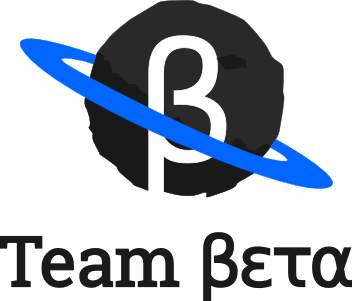

Objective
- Serious game to pique interest in Computer Science
- Fun and easy way to experiment with programming
- Hacking the game
Key focus
Programming is a superpower
Teach the basics of programming
How?
- 2D Puzzle Platformer
-
You interact with the environment
- Console
- Solve Puzzles with the help of programming
Features
- Particles
- Mattresses and conveyor belts
- Programmable blocks
- Screenshake
- Dancing robot
- Secret jetpack mode
Tools
-
Phaser
- HTML5 game framework
- JavaScript
-
Jquery-Terminal
- Command line
- Use JavaScript commands in the game
Play Testing
Future
-
Function editor
- If-else
- loops
- Challenge players to make creative solutions
The Game
https://team-beta.github.io/furry-sansa/
questions.forEach(function(q) {
ask(q);
})